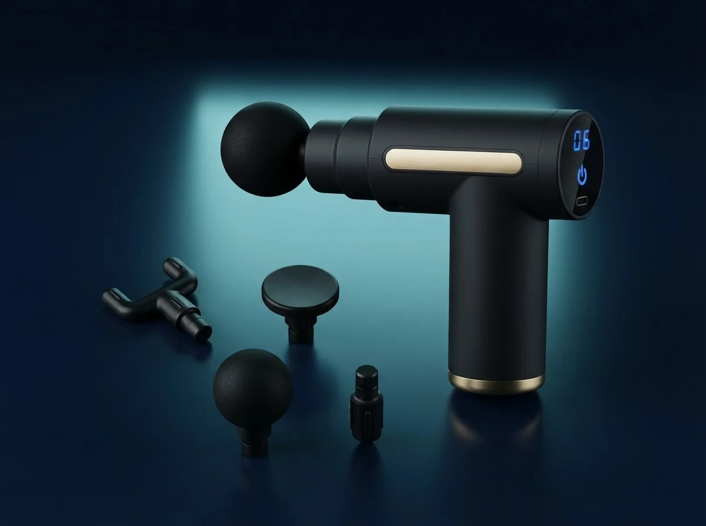

A pistola massageadora que relaxa a musculatura, reduz a tensão e ajuda seu corpo a se recuperar depois do treino, do trabalho ou da viagem. Prática, potente e pronta para usar em qualquer lugar.
Quero minha pistola com 20% offSe você treina, trabalha o dia todo ou vive em movimento, conhece bem essa sensação:
Músculos tensos e rígidos no fim do dia.
Aquela fadiga pesada depois do treino ou da jornada de trabalho.
Dificuldade para relaxar, mesmo quando você finalmente para.
Sem tempo (nem dinheiro) para massagens toda semana.
A tensão acumula. O corpo cobra. E adiar a recuperação só deixa o próximo dia mais pesado.
Cuidar da musculatura não precisa ser caro nem complicado.
A pistola massageadora foi feita para quem leva a recuperação a sério — sem depender de agenda de massagista nem de horário de academia. Leve, ergonômica e potente, ela aplica uma massagem por percussão que relaxa a musculatura e ajuda a aliviar a tensão acumulada.
Com display digital, vários níveis de intensidade e ponteiras para diferentes grupos musculares, você monta a sua massagem do seu jeito — pescoço, costas, pernas, braços — em poucos minutos, onde estiver.
A massagem por percussão ajuda a soltar a tensão acumulada depois do esforço.
Cuide do corpo no seu tempo e mantenha a rotina ativa com mais disposição.
Cabe na mochila e acompanha você em casa, na academia ou na viagem.
Tenha a sua massagem sempre à mão, sem pagar por sessões frequentes.
Troque a ponteira e ajuste a intensidade para cada parte do corpo.
Um corpo mais leve muda o seu humor e a sua energia.
Resultados podem variar de pessoa para pessoa. Melhores resultados com uso frequente aliado a rotina de treino e alongamento.

Chegou, carregou e já pode usar. Simples assim.
Produto de alta qualidade, pensado para durar e acompanhar sua rotina.
Encaixa na mão com conforto e alcança as áreas que você precisa sem esforço.
Do relaxamento leve ao mais profundo, você controla no toque.
Massagem sob medida para cada grupo muscular.
Sua compra acompanhada do pedido à entrega.
Você não fica sozinho. A gente ajuda no que precisar.
Três passos e alguns minutos. Sem manual complicado, sem hora marcada.
Selecione a ponteira ideal para a região do corpo que você quer trabalhar.
Ajuste no display, do leve ao mais intenso — você controla no toque.
Passe sobre o músculo e sinta a tensão ceder.
Recuperação pós-treino sem sair de casa.
Alívio da tensão depois da jornada de trabalho.
Leve na mala e cuide do corpo em qualquer lugar.
Bem-estar não precisa de motivo.
Alívio da tensão depois dos treinos mais intensos.
Corpo mais disposto entre um treino e outro.
Cuide da musculatura em casa, sem depender de massagens frequentes.
Muita gente sente o relaxamento já nas primeiras utilizações. Com uso frequente, o conforto acompanha a sua rotina.
Resultados podem variar.
Comprar online com a gente é sem risco. Você tem o direito de arrependimento de 7 dias previsto no Código de Defesa do Consumidor: recebeu, testou e não era para você? É só entrar em contato dentro do prazo que resolvemos.
Garantia de 7 dias · Compra 100% seguraChega de terminar o dia com a musculatura travada e adiar a recuperação. Leve a sua massagem para onde quiser, no seu tempo, do seu jeito — com 20% de desconto e garantia de 7 dias.
Quero minha pistola com 20% off